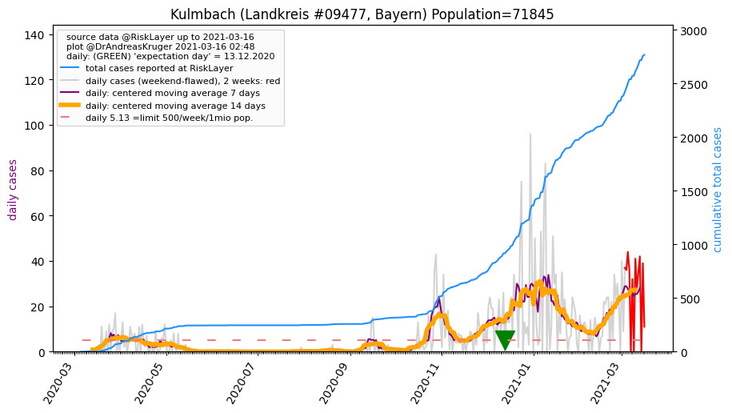
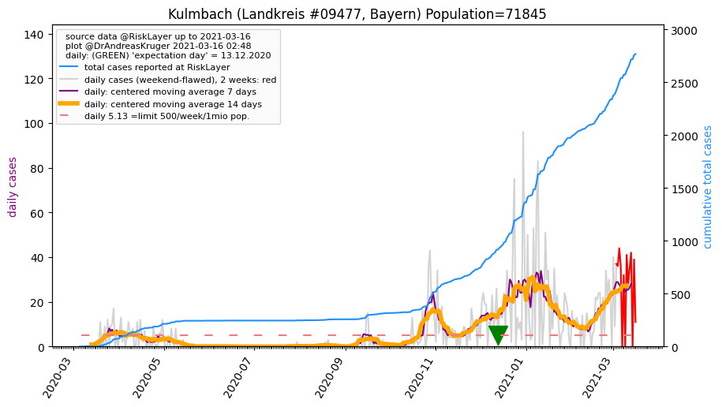

")
")
")
")
")
")
")

")
")
")
")
| Coburg_KS (0.0 km) |
Coburg_LK (1.6 km) |
Lichtenfels_LK (20.4 km) |
| Sonneberg_LK (20.6 km) |
Hildburghausen_LK (25.0 km) |
Kronach_LK (29.9 km) |
| Haßberge_LK (33.9 km) |
Kulmbach_LK (41.1 km)  |
Bamberg_LK (41.6 km) |
| Bamberg_KS (42.2 km) |
Suhl_KS (43.4 km) |
Saalfeld-Rudolstadt_LK (48.3 km) |
All plots are regenerated with new data every night. Beware this temporary hotspot is an experimental page - it might get removed, so please do not link to it. Instead link to project http://tiny.cc/cov19de.